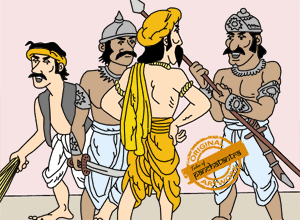
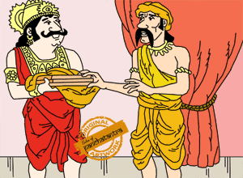

वर्धमान नामक एक शहर में एक बहुत ही कुशल व्यापारी रहता था। राजा को उसकी क्षमताओं के बारे में पता था, और इसलिए उसने उसे राज्य का प्रशासक बना दिया। अपने कुशल तरीकों से उसने आम आदमी को भी खुश रखा था, और साथ ही दूसरी तरफ राजा को भी बहुत प्रभावित किया था। कुछ दिनों बाद व्यापारी ने अपनी लड़की का विवाह तय किया। इस उपलक्ष्य में उसने एक बहुत बड़े भोज का आयोजन किया। इस भोज में उसने राज परिवार से लेकर प्रजा, सभी को आमंत्रित किया। भोज के दौरान उसने सभी को बहुत सम्मान दिया और सभी मेहमानों को आभूषण और उपहार दिए।राजघराने का एक सेवक, जो महल में झाड़ू लगाता था, वह भी इस भोज में शामिल हुआ,
मगर गलती से वह एक ऐसी कुर्सी पर बैठ गया जो राज परिवार के लिए नियत थी। यह देखकर व्यापारी आग-बबूला हो गया और उसने सेवक की गर्दन पकड़ कर उसे भोज से धक्के दे कर बाहर निकलवा दिया। सेवक को बड़ी शर्मिंदगी महसूस हुई और उसने व्यापारी को सबक सिखाने की सोची। कुछ दिनों बाद, एक बार सेवक राजा के कक्ष में झाड़ू लगा रहा था। उसने राजा को अर्धनिद्रा में देख कर बड़बड़ाना शुरू किया: “इस व्यापारी की यह मजाल की वह रानी के साथ दुर्व्यवहार करे। ” यह सुन कर रहा अपने बिस्तर से कूद पड़ा और उसने सेवक से पूछा, क्या यह वाकई में सच है? क्या तुमने व्यापारी को दुर्व्यवहार करते देखा है| सेवक ने तुरंत राजा के चरण पकडे और बोला: मुझे माफ़ कर दीजिये,
मैं पूरी रात जुआ खेलता रहा और सो न सका। इसीलिए नींद में कुछ भी बड़बड़ा रहा हूँ। राजा ने कुछ बोला तो नहीं, पर शक का बीज तो बोया जा चुका था। उसी दिन से राजा ने व्यापारी के महल में निरंकुश घूमने पर पाबंदी लगा दी और उसके अधिकार कम कर दिए।अगले दिन जब व्यापारी महल में आया तो उसे संतरियों ने रोक दिया। यह देख कर व्यापारी बहुत आश्चर्य -चकित हुआ। तभी वहीँ खड़े सेवक ने मज़े लेते हुए कहा, ऐ संतरियों, जानते नहीं ये कौन हैं? ये बहुत प्रभावशाली व्यक्ति हैं और तुम्हें बाहर फिंकवा सकते हैं, जैसा इन्होने मेरे साथ अपने भोज में किया था। तनिक सावधान रहना। यह सुनते ही व्यापारी को सारा माजरा समझ में आ गया।कुछ दिनों के बाद उसने उस सेवक को अपने घर बुलाया, उसकी खूब आव-भगत की और उपहार भी दिए।  फिर उसने बड़ी विनम्रता से भोज वाले दिन के लिए क्षमा मांगते हुआ कहा की उसने जो भी किया गलत किया। सेवक खुश हो चुका था। उसने कहा की न केवल आपने मुझसे माफ़ी मांगी, पर मेरी इतनी आप-भगत भी की। आप चिंता न करें, मैं राजा से आपका खोया हुआ सम्मान वापस दिलाउंगा। अगले दिन उसने राजा के कक्ष में झाड़ू लगाते हुआ जब राजा को अर्ध-निद्रा में देखा तो फिर बड़बड़ाने लगा “हे भगवान, हमारा राजा तो ऐसा मूर्ख है की वह गुसलखाने में खीरे खाता है” यह सुनकर राजा क्रोध से भर उठा और बोला – मूर्ख सेवक, तुम्हारी ऐसी बोलने की हिम्मत कैसे हुई? तुम अगर मेरे कक्ष के सेवक न होते तो तुम्हें नौकरी से निकाल देता। सेवक ने दुबारा चरणों में गिर कर राजा से माफ़ी मांगी  और दुबारा कभी न बड़बड़ाने की कसम खाई। उधर राजा ने सोचा कि जब यह मेरे बारे में ऐसे गलत बोल सकता है तोह अवश्य ही इसने व्यापारी के बारे में भी गलत हो बोला होगा, जिसकी वजह से मैंने उसे बेकार में दंड दिया। अगले दिन ही राजा ने व्यापारी को महल में उसकी खोयी प्रतिष्ठा वापस दिला दी।
"हमें सुनी सुनाई बातों पर यकीन नहीं करना चाहिए बल्कि संशय की स्थिति में पूरी तरह से जाँच पड़ताल करके ही निर्णय लेना चाहिए।"